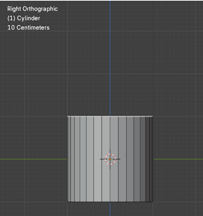
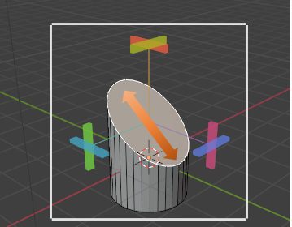

~The Shear Tool~
5/12/2025

What is the Shear Tool?
The Shear Tool is actually a very simple tool, that can be extremely helpful while modeling. That is because is will take a flat face and simply tilt it. Now when you extrude, you are no longer going straight out, but instead starting from and moving in the direction, which you are able to set for it. This can be work quite well, especially when it comes to some of the intricate twists and turns that you will be trying to work with, while constructing something like pipes.
How to use this Shear Tool
Let’s start out by getting rid of the default cube, and instead adding cylinder. This way we can demonstrate this usefulness while building a piping system in 3D. Take this new cylinder, that you just added, and bring it into Edit mode, and then select the top face of this cylinder.
Next, go into Right Orthographic view. By typing the number 3 on the numpad.
Now grab the Shear tool from the tool box.

You will notice these strange, colored rectangular knobs on the Shear gizmo, when you look into the viewport

Each of those colored knobs, will represent a different axis, in which you can move the face around to achieve the look you want. If you move the red knob at the top, it really won’t do anything.
If you move the front green knob, it will twist the cylinder around, like this.
It is actually the maroon knob, at the right that we want to work with to make the object shear correctly. We can undo that twist by using the ctrl-Z and then try moving that maroon stick instead.
We can control the amount of tilt by using the Last operation dialog box at the bottom of the page. Move the Offset amount to change the amount of this tilt.
Notice that using the tool, that it has elongated that top face just a bit.

Now when you select that top face, and hit the E key we can extrude the shape off into the direction that is now set.

Grab the Shear tool again to change the tilt on this new top face.
And then use the extrude tool again to advance the length of this piping.
You can try and get a bit of a more uniform shape, by using the scale tool at its bend points. Alt-select that edge to select entire loop, and scale it down a bit.
Extra Mesh Objects
If you had added the extra mesh objects to the Blender program, you may have an easier time of creating these pipes then just using this tool, and trying to build things from scratch.
To Sphere Tool
Ok, so let’s now take a look at this second tool, the To Sphere tool, which is lurking just below the Shear tool.
All this tool does is to try and take something and turn it into a sphere.
We can start by bringing our cube into Edit mode; except that if we try to use it on this simple cube, it will do nothing, and that is because to create a sphere takes more than what the default cube is willing to give.
We need to Sub divide this cube to give it more geometry. Right click to reach the sub divide menu.
Bring the sub divisions up to 10
Now we can grab the To Sphere tool, and it will actually do something.
Drag the Factor Slider all of the way to 1.000, and you turn a cube into a perfect sphere.
Warning, you will find this tool will not work on everything. For example, take this cylinder. When we bring this cylinder in from Object mode, we want to make sure that we set the Cap Fill Type to Triangle fan.

With it set to the Triangle fan, we will at least be able to see some changes, although those changes will not exactly come anywhere near emulating a sphere.
Well, that is all there is to it, to understanding these tools. You may find them helpful or not, for your own 3D modeling needs.